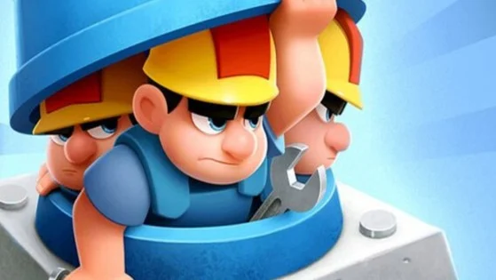

Brawl Stars est un jeu vidéo de stratégie et de tir en arènes (type MOBA et battle royale) en free-to-play, développé et édité par le studio finlandais Supercell. Il sort en version bêta le 15 juin 2017 sur iOS uniquement au Canada, puis en juin 2018 sur Android. En décembre 2018, Supercell annonce la fin de la bêta et la sortie globale officielle du jeu sur iOS et Android.
Brawl Stars est un MOBA, c'est-à-dire une arène de bataille en ligne multijoueur où les joueurs affrontent d'autres joueurs, seuls ou en équipe de deux, trois ou cinq. Pour cela, le joueur incarne un personnage parmi les "brawlers" afin d'éliminer les adversaires. Chaque personnage possède des capacités spécifiques ainsi que ses propres forces et faiblesses. Il existe de nombreux modes de jeu. Nous en parlerons dans la partie "gameplay" de ce site internet.
Brawl Stars se joue à partir d'un affichage en mode paysage tandis que le joueur utilise ses deux mains afin de manier son personnage : l'une pour déplacer le personnage et l'autre pour diriger ses attaques. Le jeu intègre aussi deux configurations de jeu : par défaut, le Tap, le joueur utilise une croix directionnelle virtuelle pour bouger le combattant puis glisse le doigt de son personnage à la cible pour attaquer ; autrement, le Stick, le déplacement du brawler s'effectue grâce à un joystick virtuel tandis qu'une attaque se produit par tapotement sur l'écran.

Brawl Stars est développé par la société informatique Supercell. C'est Jon Fronzas qui, en 2014, commence à travailler sur le projet qui avait pour but premier d'être un battle royale. L'idée du combat en 3 contre 3 est arrivée après, lorsque les testeurs (membres de Supercell et leur entourage) ont critiqué le manque de complicité dans le jeu. Avant la sortie du titre, Supercell connaissait déjà une renommée mondiale grâce à la parution de nombreux jeux mobiles à succès tels que Clash of Clans, Boom Beach et Clash Royale.
Les créateurs de Brawl Stars ont peaufiné le gameplay et les personnages au cours des quatre années de développement, même si la base était là dès le début.
Ces personnages, sortis tout droit d’un univers de science-fiction, datent de l’époque où Brawl Stars avait pour nom de code Laser. C’est alors que l’artiste Paul Chambers a rejoint l’équipe. « Le temps pressait. Le jeu représentait un gros risque car, après un an de travail, le thème n’était toujours pas défini », explique Paul, qui a suggéré le Western. « Après avoir saisi les spécificités du genre, tout a été assez facile. »
Brawl Stars est donc un jeu en constante évolution dans lequel seuls les meilleurs parviennent à survivre. Et ce n’est que le début, les développeurs ont de quoi étonner pour les semaines, les mois et même les années à venir. Alors, choisissez votre personnage préféré et entrez dans l’arène !
Ils sont constitué de 60 membres différents. Impressionant pour un jeu avec 8 millions de joueurs à gérer!
Parmis eux les communitys managers gère tout ce qui est la communication.
La communication se passe sur les réseaux sociaux:
-Tik tok pour la communication rapide d'informations
-Youtube (majoritairement) pour les mises à jours et animations
-Twitter ("X") pour les maintenances
-Instagram pour les concepts et les informations suplémentaires
Ils s'occupent de présenter les mises a jours dans les vidéos appeler "Brawl Talk"
voci un exemple de brawls talk le plus récent :
Ils s'occupent aussi de parler des problèmes majeurs et de répondre aux grandes questions que se posse la communauté dans les vidéos appeler "Time to Explain". Voici un exemple de Time to explain :
Vidéo Time to explainMaintenant parlons des autres métier present pour la conception de ce jeux:
-Les dévellopeurs : s'occupent de la partie langage de code/programation . Brawl Stars est codée en "C++"
-Les games artist : ils travaillent avec les graphistes 2d et 3d.Ils sont responsable de l'esthétique du jeu, des personnages et objets interactifs aux environnements immersifs et effets visuels.
-Les graphistes 2d/3d : s'occupent des graphismes du jeux
-Le rédacteur/Pdg de Brawls stars : il s'occupe d'écrire les scripts de tous les grandes idées qui se dérouleront dans le jeu vidéo
-Le lead game designer : il joue le rôle de leader au sein du projet de création d’un jeu vidéo
-Les ingénieurs du son : Ils travaillent avec les doubleurs qui font les répliques des personnages. Ils sont chargés de créer tous les effets sonores qui apparaissent au sein du projet, tels que la musique, les voix, les sons d’ambiance etc...

Les doubleurs qui travaillent avec Brawl Stars :
Les doubleurs qui font les voies des personnages